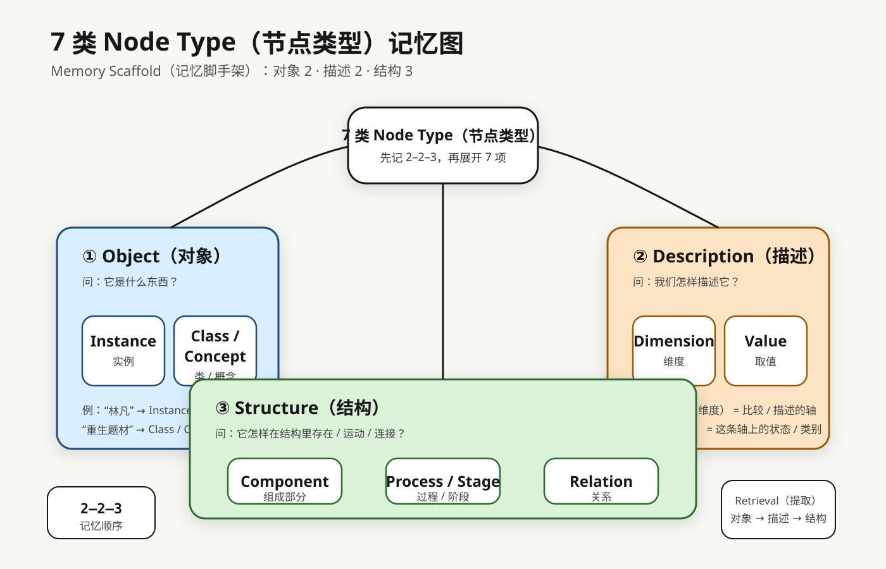
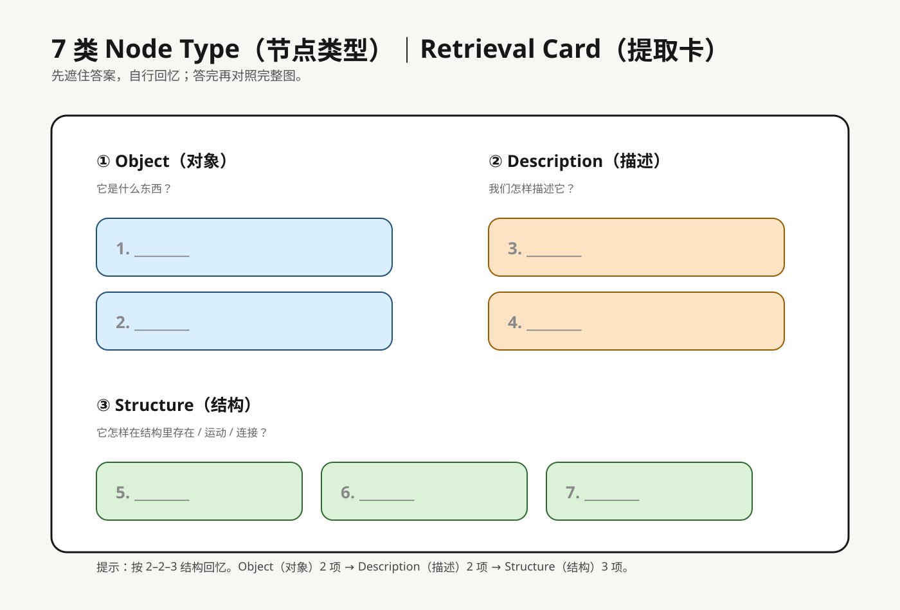

Knowledge Structure Mapping · Memory Pack
7 类 Node Type 记忆包
目标不是现在完全学透所有边界，而是先把 7 类稳定记住。采用 Meaningful Chunking（意义组块） + Retrieval Practice（提取练习）：先记 2–2–3，再展开成 7 项。
1. 记忆主图（彩色 + 结构）
先看完整图，建立颜色和结构联想：

2. 组块规则
对象（Object）
它是什么东西？
1. Instance（实例）
2. Class / Concept（类 / 概念）
描述（Description）
我们怎样描述它？
3. Dimension / Facet（维度 / 分面）
4. Value（取值）
结构（Structure）
它怎样在结构里存在 / 运动 / 连接？
5. Component（组成部分）
6. Process / Stage（过程 / 阶段）
7. Relation（关系）
3. 提取卡（先遮住答案）
先不要看答案，按 对象 2 → 描述 2 → 结构 3 的顺序回忆：

4. 最小记忆流程
第一步：恢复组块
对象 2 —— 描述 2 —— 结构 3
第二步：恢复每组内容
对象：Instance / Class
描述：Dimension / Value
结构：Component / Process / Relation
第三步：再看一眼定义或例子
- 第一次提取：现在
- 第二次提取：今天稍后
- 第三次提取：明天
这三轮就够作为当前支线的最小记忆方案。